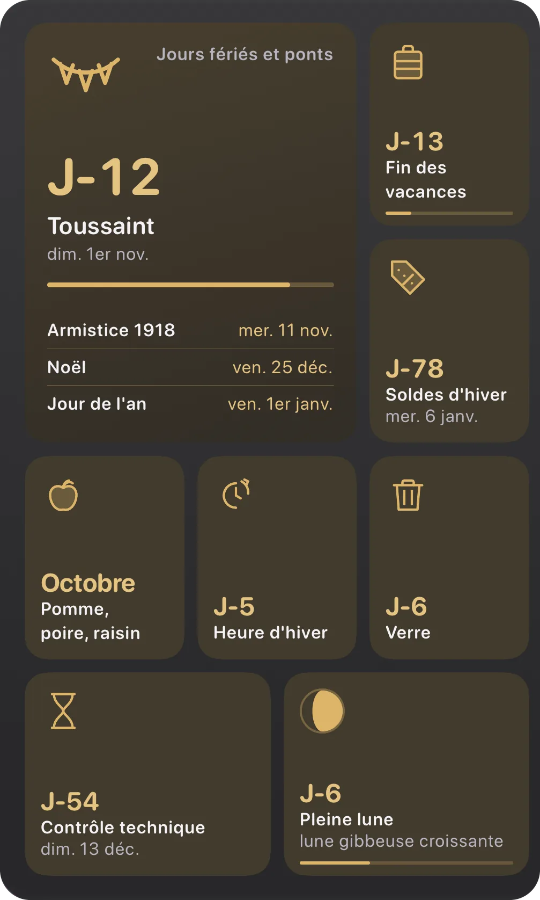
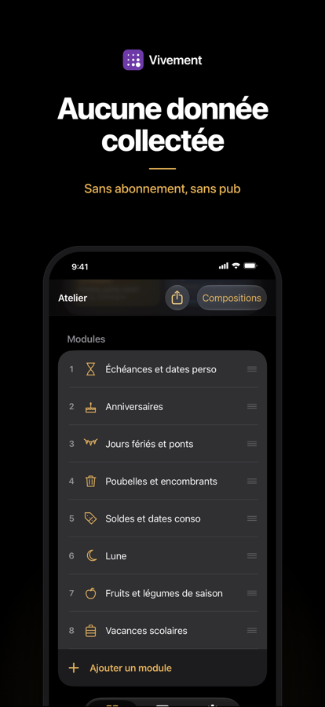
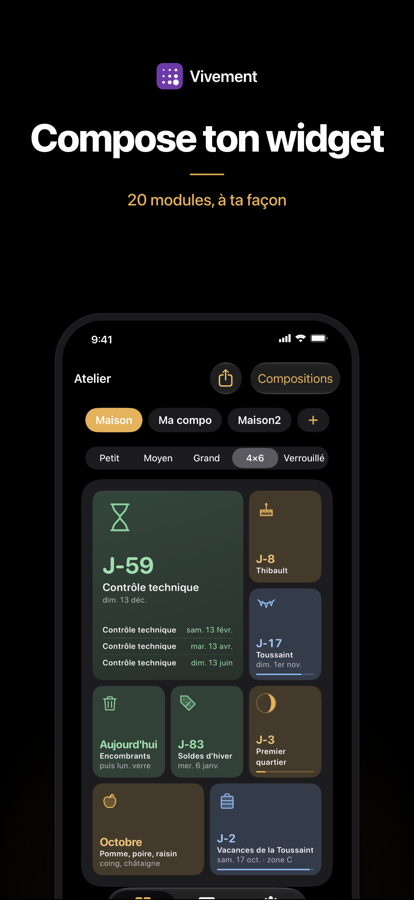
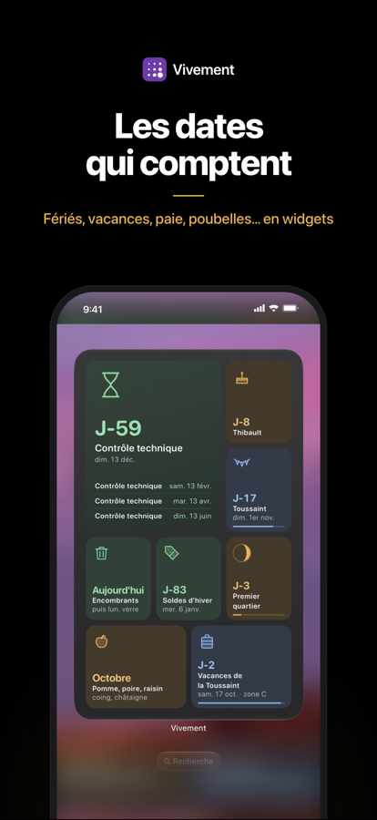
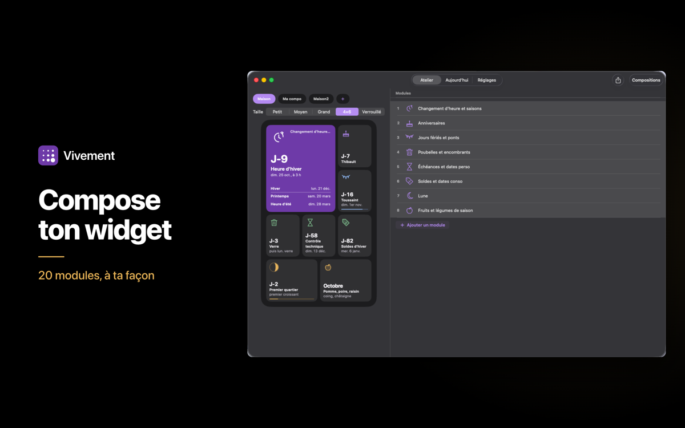
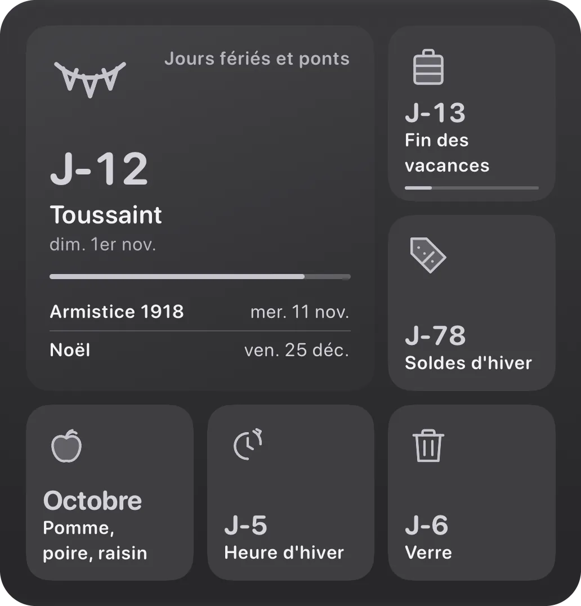

Vivement
Les dates qui comptent, en widgets.
Sur iPhone, iPad, Mac et Apple Watch.
Télécharger sur l'App Store
Comment ça marche
1
Active tes modules
Fériés, vacances, poubelles, paie : tu actives ceux qui te parlent, tu ignores le reste.

2
Compose dans l'Atelier
Choisis tes modules, la taille, l'un des 3 styles et l'une des 8 couleurs d'accent. C'est ton widget, pas le nôtre.

3
Pose ton widget
Écran d'accueil, écran verrouillé, bureau du Mac, cadran de la Watch : les dates te suivent, sans ouvrir l'app.

20 modules
Chaque module suit un type de date. Tu actives ceux qui te parlent, tu ignores le reste.
- Jours fériés et ponts
- Vacances scolaires
- Année et semaine
- Changement d'heure et saisons
- Fêtes à ne pas oublier
- Saint du jour
- Dicton du jour
- Lune
- Soleil
- Fruits et légumes de saison
- Paie
- Congés et RTT
- Jours ouvrés restants
- Poubelles et encombrants
- Échéances et dates perso
- Soldes et dates conso
- Compte à rebours
- Anniversaires
- Prochain événement
- Prochaine tâche
Tes données restent à toi
Aucune donnée collectée
Pas de compte, pas de pub, pas de traceur, aucun serveur à nous. L'étiquette App Store le dit : « Aucune donnée collectée ».
Synchro iCloud privé
Tes réglages et compositions se synchronisent entre tes appareils via ton iCloud privé, et uniquement lui. Personne d'autre n'y a accès, pas même nous.
Achat unique
Vivement Premium s'achète une fois, pour toujours. Pas d'abonnement, pas de relance. Le partage familial est pris en charge.
Sur tous tes écrans


iPad, Mac, iPhone : les mêmes compositions, synchronisées par ton iCloud privé.
Questions fréquentes
Les dates se mettent à jour toutes seules ?
Oui. Tout ce qui se calcule — fériés, ponts, soldes, lune, soleil — est calculé par l'app. Et les calendriers officiels, comme les vacances scolaires et les dates fiscales, sont mis à jour automatiquement, sans mise à jour de l'app.
Quelles zones de vacances ?
A, B et C, plus la Corse et l'outre-mer. Tu choisis ta commune une fois, l'app déduit ta zone.
Et ma vie privée ?
Aucune collecte, pas de compte, pas de pub. La synchronisation passe par ton iCloud privé, et uniquement lui.
Vivement Premium, c'est quoi ?
Un achat unique à 2,99 €, pour toujours. Pas d'abonnement. Le partage familial est pris en charge.
Sur Apple Watch aussi ?
Oui : des complications sur le cadran, avec l'iPhone qui fait le travail.